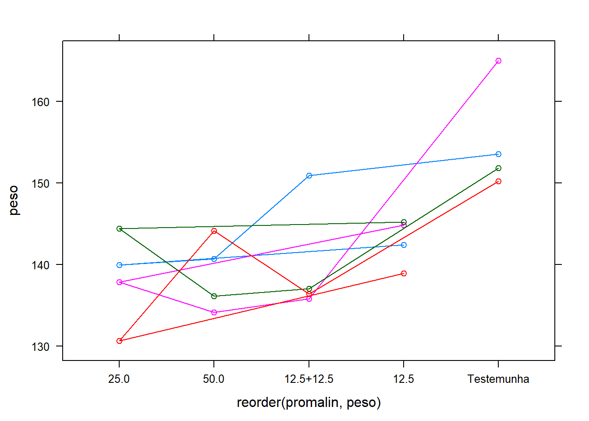
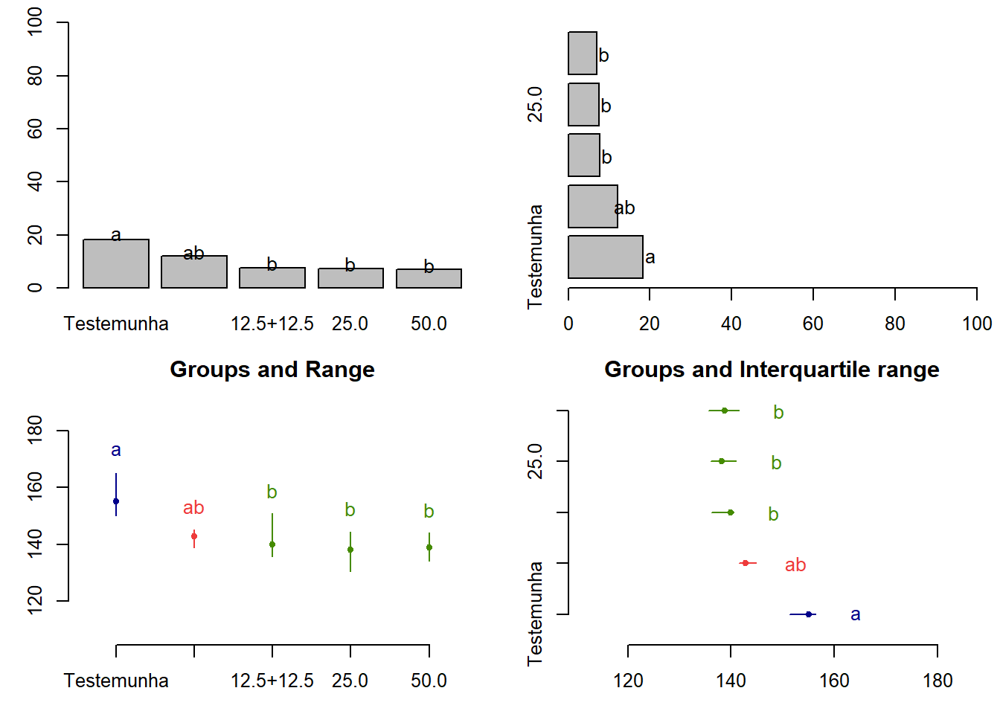
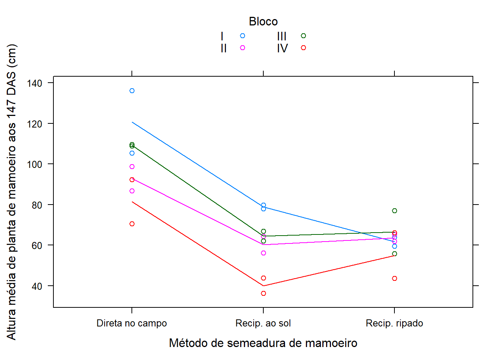

chapter9 Delineamento em bloco casualizado
O delineamento em blocos casualizados (DBC) tem três princípios basicos de experimentação:
repetição
casualização
controle local
É o deliamento mais utilizado de todos delineamento. Ele é utilizado quando há heterogeneidade nas condições experimentais. Nesse caso divide-se o material experimental, ou amostra, em bloco homogêneos de forma a contemplar as diferenças entre grupos. A ANOVA associada a este modelo de experimento é também conhecida como Two Way ANOVA.
9.1 Análise de experimento DBC
Resultados de um experimento instalado na Fazenda Chapadão, no município de Angatuba - SP. O delineamento experimental foi o de blocos casualizados, sendo as parcelas constituídas de 4 plantas espa?adas de 6 x 7 metros, com 12 anos de idade na época da instalação do experimento.
Importando dados
conferir se temos fatores para fazer a análise de variância
## 'data.frame': 20 obs. of 3 variables:
## $ promalin: Factor w/ 5 levels "12.5","12.5+12.5",..: 1 3 4 2 5 1 3 4 2 5 ...
## $ bloco : Factor w/ 4 levels "I","II","III",..: 1 1 1 1 1 2 2 2 2 2 ...
## $ peso : num 142 140 141 151 154 ...Lembramos que o peso deve ter conteudo numerico e o promalin e bloco deve ser fator.
Verificação gráfica**
## Loading required package: lattice
O efeito do bloco é aditivo?
Ligar as observações com o mesmo bloco com a função type ="o"

Reordenar os tratamentos
## Loading required package: plyrGraficos reordenados da menor média a maior média por tratamento

9.1.1 Análise de variância
Fazendo a análise de variância
## Analysis of Variance Table
##
## Response: dados$peso
## Df Sum Sq Mean Sq F value Pr(>F)
## dados$bloco 1 71.57 71.572 2.4574 0.139291
## dados$promalin 4 788.95 197.238 6.7721 0.002994 **
## Residuals 14 407.75 29.125
## ---
## Signif. codes: 0 '***' 0.001 '**' 0.01 '*' 0.05 '.' 0.1 ' ' 1Extraindo o coeficiente de variação
## [1] 3.774477Análise gráfica dos resíduos

Analisando a Figura acima sugere que o principal problema deste conjunto de dados pode ser a não normalidade.
9.1.1.1 Teste das pressuposições da análise de variância
9.1.1.1.1 Teste de Bartllet para homocedasticidade
##
## Bartlett test of homogeneity of variances
##
## data: m0$res and dados$promalin
## Bartlett's K-squared = 1.7485, df = 4, p-value = 0.7819Como observamos uma não significancia estatística neste resultado (p-value = 0.7819), devemos aceitar a hipótese nula de que as variâncias sejam as mesma em todos os níveis do fator.
9.1.1.1.2 Teste de Shapiro-Wilk para Normalidade
##
## Shapiro-Wilk normality test
##
## data: m0$res
## W = 0.855, p-value = 0.006472Como observamos uma significancia estatística neste resultado (p-value = 0.006472), devemos rejeitar a hipótese nula de que os residuoes tedem a distruibuição normal.
9.1.2 Transformação de dados
Tranformação de dados é uma das possíveis formas de contarnar o problema de dados que não obedecem os pressupostos da análise de variância. Vamos ver como isto poder ser feito com o programa R.
9.1.2.1 Transformação de dados com o BOX-COX
Para tentar contornar o problema vamos usar a transformação Box-Cox, que consiste em transformar os dados de acordo com uma expressão.
A função boxcox() do pacote MASS calcula a verossimilhança perfilhada do parâmetro lambda. Devemos escolher o valor que maximiza esta função. Nos comandos a seguir começamos carregando o pacote MASS e depois obtemos o gráfico da verossimilhança perfilhada. Como estamos interessados no máximo fazermos um novo gráfico com um zoom na região de interesse.


Localizando o ponto máximo.
9.1.2.2 Análise de variância - Ajuste com a variável transformada.
Anáise gráfica dos resíduos

Os pressupostos foram atendindos ?
Teste de Shapiro-Wilk para Normalidade
##
## Shapiro-Wilk normality test
##
## data: m1$res
## W = 0.93909, p-value = 0.2305Teste de Bartllet para homocedasticidade
##
## Bartlett test of homogeneity of variances
##
## data: m1$res and dados$promalin
## Bartlett's K-squared = 2.1761, df = 4, p-value = 0.7034## Analysis of Variance Table
##
## Response: log(dados$peso)
## Df Sum Sq Mean Sq F value Pr(>F)
## dados$promalin 4 0.036571 0.0091428 6.0129 0.004296 **
## Residuals 15 0.022808 0.0015205
## ---
## Signif. codes: 0 '***' 0.001 '**' 0.01 '*' 0.05 '.' 0.1 ' ' 19.2 Pacote para analise de experimentos
Conhecer o pacote ExpDes.pt
## [1] "anscombetukey" "bartlett" "ccboot" "ccf"
## [5] "dbc" "dic" "dql" "duncan"
## [9] "faixas" "fat2.ad.dbc" "fat2.ad.dic" "fat2.dbc"
## [13] "fat2.dic" "fat3.ad.dbc" "fat3.ad.dic" "fat3.dbc"
## [17] "fat3.dic" "ginv" "graficos" "han"
## [21] "lastC" "layard" "levene" "lsd"
## [25] "lsdb" "oneilldbc" "oneillmathews" "order.group"
## [29] "order.stat.SNK" "plotres" "psub2.dbc" "psub2.dic"
## [33] "reg.nl" "reg.poly" "samiuddin" "scottknott"
## [37] "snk" "tapply.stat" "tukey"Utilizando o exemplo anterior.
x <- dbc(trat = dados$promalin,
bloco = dados$bloco,
resp = log(dados$peso),
quali = T,
mcomp = "tukey")## ------------------------------------------------------------------------
## Quadro da analise de variancia
## ------------------------------------------------------------------------
## GL SQ QM Fc Pr>Fc
## Tratamento 4 0.036571 0.0091428 5.7552 0.00800
## Bloco 3 0.003745 0.0012483 0.7858 0.52459
## Residuo 12 0.019063 0.0015886
## Total 19 0.059379
## ------------------------------------------------------------------------
## CV = 0.8 %
##
## ------------------------------------------------------------------------
## Teste de normalidade dos residuos
## valor-p: 0.005994506
## ATENCAO: a 5% de significancia, os residuos nao podem ser considerados normais!
## ------------------------------------------------------------------------
##
## ------------------------------------------------------------------------
## Teste de homogeneidade de variancia
## valor-p: 0.8927087
## De acordo com o teste de oneillmathews a 5% de significancia, as variancias podem ser consideradas homogeneas.
## ------------------------------------------------------------------------
##
## Teste de Tukey
## ------------------------------------------------------------------------
## Grupos Tratamentos Medias
## a Testemunha 5.043544
## ab 12.5 4.961465
## b 12.5+12.5 4.940843
## b 50.0 4.932278
## b 25.0 4.927864
## ------------------------------------------------------------------------Carregar pacotes
##
## Attaching package: 'dplyr'## The following objects are masked from 'package:plyr':
##
## arrange, count, desc, failwith, id, mutate, rename, summarise,
## summarize## The following object is masked from 'package:MASS':
##
## select## The following objects are masked from 'package:stats':
##
## filter, lag## The following objects are masked from 'package:base':
##
## intersect, setdiff, setequal, unionCalculo do erro
Gerando gráfico
ggplot(erro, aes(promalin, avg, fill=promalin))+
geom_bar(stat="identity")+
geom_errorbar(aes(ymin=avg-sd, ymax =avg+sd), with=0.1, col="black") +
xlab("Tratamentos") +
ylab("Peso médio dos frutos (g)") +
theme_bw() +
theme(legend.position="top") +
annotate("text", label="ab", x=1, y=100, size = 5) +
annotate("text", label="b", x=2, y=100, size = 5) +
annotate("text", label="b", x=3, y=100, size = 5) +
annotate("text", label="b", x=4, y=100, size = 5) +
annotate("text", label="a", x=5, y=100, size = 5) +
theme(legend.position="none") +
labs(caption = "Médias seguidas de mesma letra indicam diferença nula à 5%")## Warning: Ignoring unknown parameters: with
9.3 Teste não parametrico
As funções para comparações multiplas não-paramétricas incluídas no pacote agricolae são: kruskal, waerden.test, friedman, durbin.test e Conover (1999). Os testes não-paramétricos post hoc (kruskal, friedman, durbin e waerden) estão usando o critério a diferença menos significativa de Fisher (LSD).
Carregar pacote
A função kruskal é usada para N amostras (N> 2), populações ou dados provenientes de um experimento aleatório (populações = tratamentos).
##
## Study: peso ~ promalin
## Kruskal-Wallis test's
## Ties or no Ties
##
## Critical Value: 10.41429
## Degrees of freedom: 4
## Pvalue Chisq : 0.03399839
##
## promalin, means of the ranks
##
## peso r
## 12.5 12.00 4
## 12.5+12.5 7.75 4
## 25.0 7.50 4
## 50.0 7.00 4
## Testemunha 18.25 4
##
## Post Hoc Analysis
##
## P value adjustment method: bonferroni
## t-Student: 3.286039
## Alpha : 0.05
## Minimum Significant Difference: 10.40002
##
## Treatments with the same letter are not significantly different.
##
## peso groups
## Testemunha 18.25 a
## 12.5 12.00 ab
## 12.5+12.5 7.75 b
## 25.0 7.50 b
## 50.0 7.00 b## peso groups
## Testemunha 18.25 a
## 12.5 12.00 ab
## 12.5+12.5 7.75 b
## 25.0 7.50 b
## 50.0 7.00 bGráficos
par(mfrow=c(2,2),mar=c(3,3,1,1),cex=0.8)
bar.group(woutKruskal$group,ylim=c(0,100), xlab ="promalin")
bar.group(woutKruskal$group,xlim=c(0,100),horiz = TRUE)
plot(woutKruskal)
plot(woutKruskal,variation="IQR",horiz = TRUE)
A função friedman é usada para análise de tratamentos do estudo randomizado
de bloco completo, onde a resposta não pode ser tratada através da análise de variância.
##
## Study: peso ~ bloco + promalin
##
## promalin, Sum of the ranks
##
## peso r
## 12.5 8 4
## 12.5+12.5 8 4
## 25.0 10 4
## 50.0 14 4
## Testemunha 20 4
##
## Friedman's Test
## ===============
## Adjusted for ties
## Critical Value: 10.4
## P.Value Chisq: 0.0342027
## F Value: 5.571429
## P.Value F: 0.009007502
##
## Post Hoc Analysis
##
## Alpha: 0.05 ; DF Error: 12
## t-Student: 2.178813
## LSD: 6.656383
##
## Treatments with the same letter are not significantly different.
##
## Sum of ranks groups
## Testemunha 20 a
## 50.0 14 ab
## 25.0 10 b
## 12.5 8 b
## 12.5+12.5 8 bGrafico
par(mfrow=c(2,2),mar=c(3,3,1,1),cex=0.8)
bar.group(woutfriedman$group,ylim=c(0,100), xlab ="promalin")
bar.group(woutfriedman$group,xlim=c(0,100),horiz = TRUE)
plot(woutfriedman)
plot(woutfriedman,variation="IQR",horiz = TRUE)
9.4 Exercicio 1
Obtenha: Analise exploratoria, Analise de variancia, teste de comparação multipla, e recomendações.
Comparação de métodos de Semeadura do Mamoeiro
Estudo realizado em Jaboticabal - SP por Ruiz (1977) que comparou métodos de semeadura no mamoeiro. O experimento foi instalado em delineamento de blocos casualizados, com 4 repetições, avaliando 3 métodos de semeadura. Foram avaliadas duas unidades experimentais por método em cada bloco.
Importando dados
Conferir se temos fatores para fazer a análise de variância
## 'data.frame': 24 obs. of 3 variables:
## $ bloco : Factor w/ 4 levels "I","II","III",..: 1 1 2 2 3 3 4 4 1 1 ...
## $ semead: Factor w/ 3 levels "Direta no campo",..: 1 1 1 1 1 1 1 1 2 2 ...
## $ altura: num 136.1 105.3 98.8 86.8 108.8 ...Gráficos
## I II III IV Sum
## Direta no campo 241.4 185.6 218.5 162.9 808.4
## Recip. ao sol 157.7 120.7 129.0 80.1 487.5
## Recip. ripado 123.5 127.1 132.9 109.8 493.3
## Sum 522.6 433.4 480.4 352.8 1789.2xyplot(altura ~ semead, data = dados,
groups = bloco, type = c("p", "a"),
xlab = "Método de semeadura de mamoeiro",
ylab = "Altura média de planta de mamoeiro aos 147 DAS (cm)",
auto.key = list(title = "Bloco", cex.title = 1, columns = 2))
Análise de Variância
## [1] "aov" "lm"## Analysis of Variance Table
##
## Response: altura
## Df Sum Sq Mean Sq F value Pr(>F)
## bloco 3 2648.2 882.7 7.2162 0.002219 **
## semead 2 8429.1 4214.6 34.4535 7.014e-07 ***
## Residuals 18 2201.9 122.3
## ---
## Signif. codes: 0 '***' 0.001 '**' 0.01 '*' 0.05 '.' 0.1 ' ' 1## Df Sum Sq Mean Sq F value Pr(>F)
## bloco 3 2648 883 7.216 0.00222 **
## semead 2 8429 4215 34.453 7.01e-07 ***
## Residuals 18 2202 122
## ---
## Signif. codes: 0 '***' 0.001 '**' 0.01 '*' 0.05 '.' 0.1 ' ' 1Checagem gráfica

Teste das pressuposições de normalidade de homocedasticidade
##
## Shapiro-Wilk normality test
##
## data: residuals(m0)
## W = 0.95197, p-value = 0.2988##
## Bartlett test of homogeneity of variances
##
## data: residuals(m0) by dados$semead
## Bartlett's K-squared = 4.5219, df = 2, p-value = 0.1043Teste de médias
Teste de Tukey
tu <- with(dados, HSD.test(altura, semead,
DFerror=df.residual(m0),
MSerror=deviance(m0)/df.residual(m0)))
## $statistics
## MSerror Df Mean CV MSD
## 122.3258 18 74.55 14.83581 14.11359
##
## $parameters
## test name.t ntr StudentizedRange alpha
## Tukey semead 3 3.609304 0.05
##
## $means
## altura std r Min Max Q25 Q50 Q75
## Direta no campo 101.0500 19.263956 8 70.5 136.1 91.000 102.05 109.025
## Recip. ao sol 60.9375 15.187489 8 36.3 79.8 53.175 63.25 69.650
## Recip. ripado 61.6625 9.544922 8 43.7 77.1 58.575 62.95 65.425
##
## $comparison
## NULL
##
## $groups
## altura groups
## Direta no campo 101.0500 a
## Recip. ripado 61.6625 b
## Recip. ao sol 60.9375 b
##
## attr(,"class")
## [1] "group"require(dplyr)
require(ggplot2)
erro = summarise(group_by(dados, semead),
avg = mean(altura), sd = sd(altura))
ggplot(erro, aes(semead, avg, fill=semead))+
geom_bar(stat="identity")+
geom_errorbar(aes(ymin=avg-sd, ymax =avg+sd), with=0.1, col="black") +
xlab("Tratamentos") +
ylab("Altura média de planta de mamoeiro aos 147 DAS (cm)") +
theme_bw() +
theme(legend.position="top") +
annotate("text", label=tu$groups$groups[1], x=1, y=20, size = 5) +
annotate("text", label=tu$groups$groups[2], x=2, y=20, size = 5) +
annotate("text", label=tu$groups$groups[3], x=3, y=20, size = 5) +
theme(legend.position="none") +
labs(caption = "Médias seguidas de mesma letra indicam diferença nula à 5%")## Warning: Ignoring unknown parameters: with
Teste de Scott-Knott
library(ScottKnott)
sk <- SK(x=dados, y=dados$altura, model="altura~bloco+semead", which="semead")
summary(sk)## Levels Means SK(5%)
## Direta no campo 101.0500 a
## Recip. ripado 61.6625 b
## Recip. ao sol 60.9375 b## $av
## Call:
## aov(formula = altura ~ bloco + semead, data = dat)
##
## Terms:
## bloco semead Residuals
## Sum of Squares 2648.193 8429.103 2201.864
## Deg. of Freedom 3 2 18
##
## Residual standard error: 11.0601
## Estimated effects may be unbalanced
##
## $groups
## [1] 1 2 2
##
## $nms
## [1] "Direta no campo" "Recip. ao sol" "Recip. ripado"
##
## $ord
## [1] 1 3 2
##
## $m.inf
## mean min max
## Direta no campo 101.0500 70.5 136.1
## Recip. ripado 61.6625 43.7 77.1
## Recip. ao sol 60.9375 36.3 79.8
##
## $sig.level
## [1] 0.05
##
## attr(,"class")
## [1] "SK" "list"9.5 Referência
MELO, M. P.; PETERNELI, L. A. Conhecendo o R: Um visão mais que estatística. Viçosa, MG: UFV, 2013. 222p. Cap. 1.
BANZATTO, D. A; KRONKA, S. N. Experimentação agrícola. Jaboticabal, SP: FUNEP, 2006, 237p.
ZEVIANI, W. M. Estatística Básica e Experimentação no R. 45p.